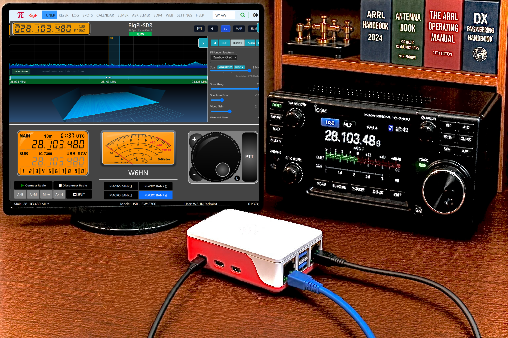
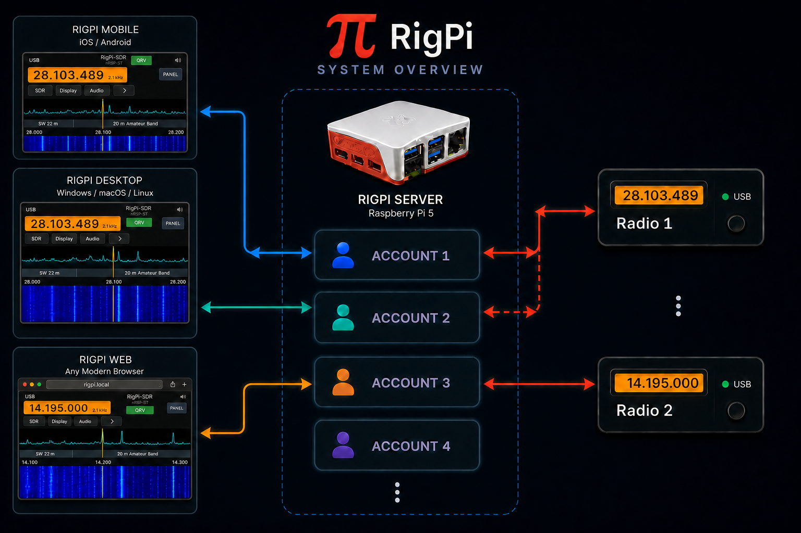

|
<< Click to Display Table of Contents >> Navigation: »No topics above this level« |
RigPi™ Station Server v 5.0

RigPi Station Server
RigPi (RSS: RigPi Station Server) is a remote control system for amateur radio stations, developed by Howard Nurse, W6HN, starting in 2018. It enables full remote operation of your station using a browser in any computer, tablet, or smartphone — over your local network or the internet.
At the heart of RigPi is a Raspberry Pi computer running a web-based control interface. No additional software is required on the client device — just a modern browser. RigPi connects to your radio equipment and provides comprehensive station control including frequency and mode management, CW keying, browser audio, logging, digital modes, integrated SDR, and more.
Raspberry Pi 5 strongly recommended. RigPi 5 is designed and optimized for a 64-bit Raspberry Pi 5. The earlier Raspberry Pi 4 models can run RigPi, but they provide substantially less processing headroom. For the best performance—especially with ELMER SDR, FT8 decoding, browser audio, Elmer Voice, scanning, recording, and multiple simultaneous users—use a Raspberry Pi 5. A Pi 5 with 8 GB of memory is an excellent starting point; additional memory provides more margin for demanding or multi-user stations.
Key features include:
Ask Elmer — a RigPi and amateur-radio assistant grounded in Official Help, project source code, community discussions, and approved live station data. It answers in any of 22 supported languages, cites its sources, displays approved images and maps, and can help with RigPi setup, operating questions, callbooks, FCC searches, weather, repeaters, shortwave schedules, and logbook history.
Elmer Voice — spoken questions and commands, spoken answers, and live transcription and translation. Voice features require HTTPS and work best in a current Google Chrome browser.
Elmer Control — typed or spoken natural-language commands for tuning, mode and bandwidth changes, receiver controls, CW text and speed, macros, scanning, recording, and other supported station actions. Potentially disruptive actions use operator confirmation and RigPi access controls.
Radio control via Hamlib/rigctld, with support for hundreds of transceivers and up to four radios.
ELMER SDR — an integrated software-defined-radio panadapter with real-time spectrum and waterfall displays, demodulation, memories, scanning, squelch-controlled recording, FT8 decoding, spots, and signal information.
Browser audio with full-duplex WebRTC support, replacing Mumble used by earlier RigPi versions.
Selectable receive audio — listen through the SDR demodulator or switch to the connected radio's USB audio CODEC without changing the spectrum, tuning, or transmit-audio path.
Split operation with separate receive and transmit frequencies, two frequency readouts, contrasting spectrum markers, direct spectrum control, and natural-language Elmer Control commands.
CW keying with CAT, Winkeyer, and K1EL RigPi Keyer support.
Digital modes with WSJT-X, Fldigi, and JS8Call integration.
Logging and callbooks with ADIF import/export, worked-before history, QRZ and HamQTH lookup, and the onboard FCC database.
Secure remote access through free native DuckDNS HTTPS, or through Cloudflare Tunnel when router port forwarding is unavailable.
Temporary Remote Support — an administrator can grant time-limited, key-only diagnostic access through a temporary address or the station’s existing secure address, then revoke it immediately or let it expire automatically.
Local and remote SDR support for up to four local devices, plus compatible OpenWebRX and KiwiSDR receivers selected from a built-in world map.
Multi-user operation with independent accounts, access levels, scheduling, and optional login, logout, and spot notifications. Practical capacity depends on Raspberry Pi resources and the station workload.
RigPi is open source under the MIT License and is available on GitHub to encourage further development by the amateur-radio community. Ask Elmer and other hosted services require an internet connection and separate service configuration.
RSS Block Diagram

Account |
Controlled Radio |
Controlled By |
Account 1 |
Radio 1 |
iPad/iPhone |
Account 2 |
Radio 1 through Account 1 |
Google Nexus |
Account 3 |
Radio 3 |
iPhone using CommCat Mobile (now discontinued) |
Account 4 |
Not connected above |
None |
RigPi is a Trademark of Howard Nurse, W6HN